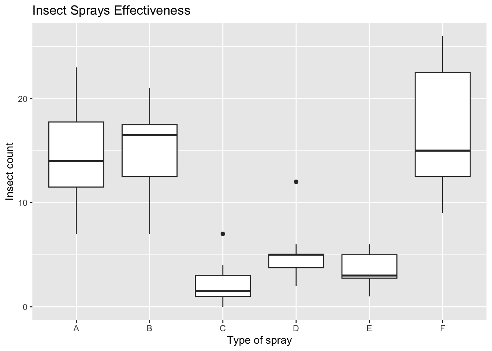
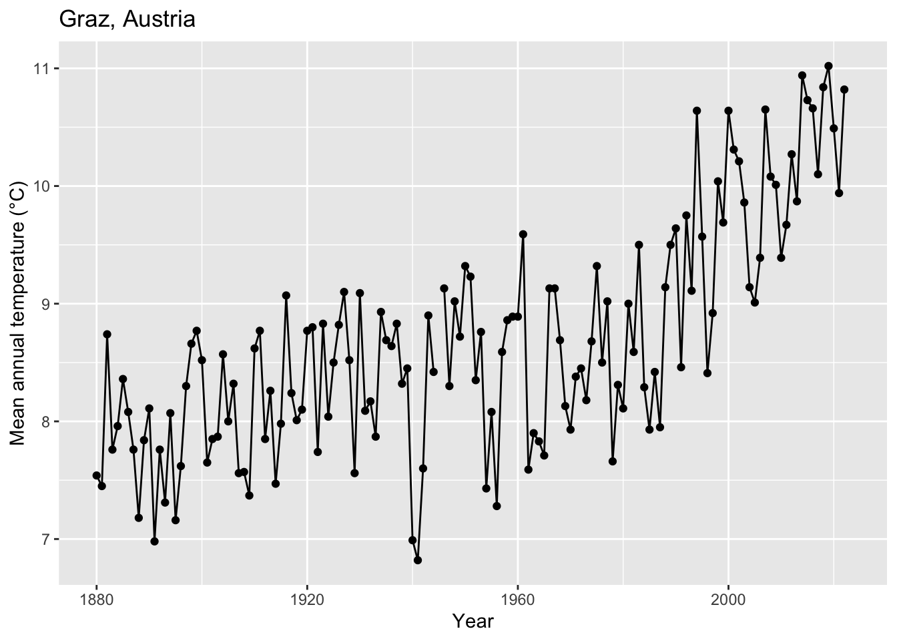
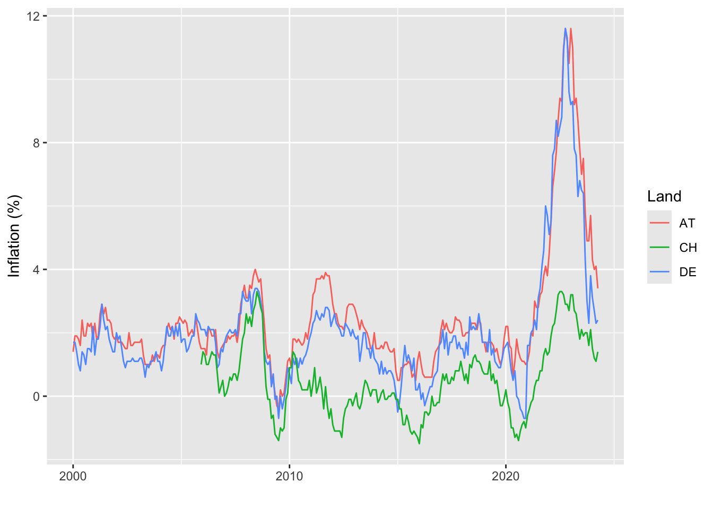
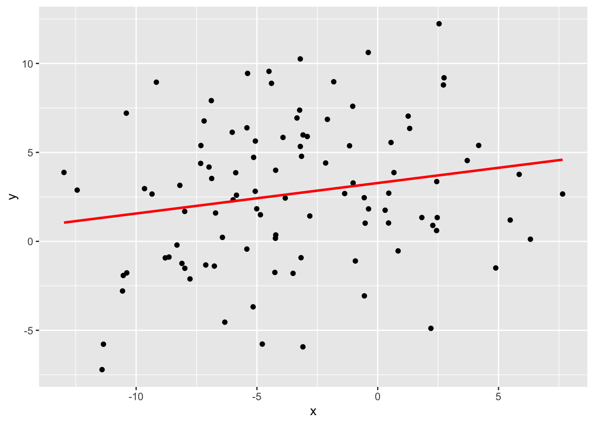
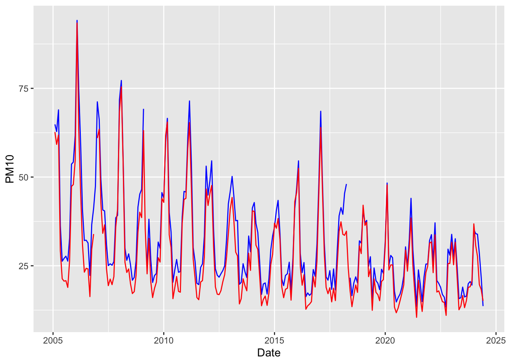
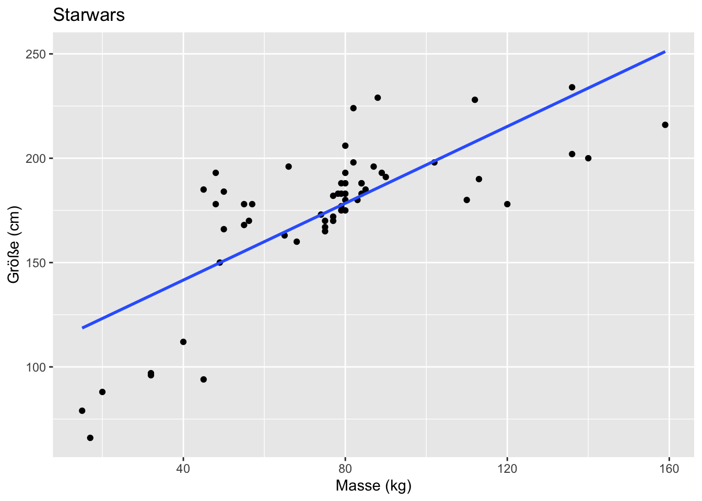
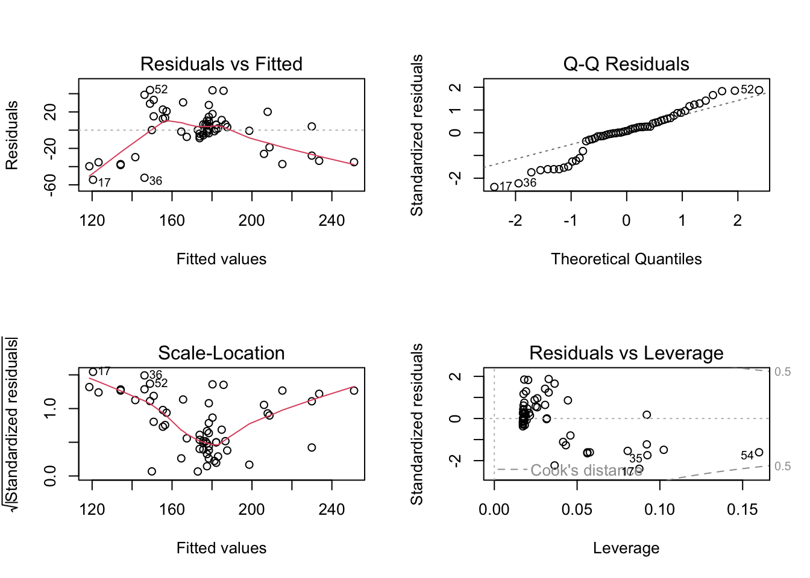

result = sqrt(((25 + 7.1) / (5 * pi))^4 + (-6.2 * 2/3)^2 / (0.8 + 3^(2/7)))
round(result, 3)[1] 5.032Statistische Datenanalyse mit R
Clemens Brunner
14. Januar 2027
[,1] [,2] [,3] [,4] [,5]
[1,] 1 2 3 4 5
[2,] 1 2 3 4 5
[3,] 1 2 3 4 5
[4,] 1 2 3 4 5
[5,] 1 2 3 4 5
[6,] 1 2 3 4 5
[7,] 1 2 3 4 5
[8,] 1 2 3 4 5
[9,] 1 2 3 4 5
[10,] 1 2 3 4 5
[11,] 1 2 3 4 5
[12,] 1 2 3 4 5
[13,] 1 2 3 4 5
[14,] 1 2 3 4 5
[15,] 1 2 3 4 5
[16,] 1 2 3 4 5
[17,] 1 2 3 4 5
[18,] 1 2 3 4 5
[19,] 1 2 3 4 5
[20,] 1 2 3 4 5
[21,] 1 2 3 4 5
[22,] 1 2 3 4 5
[23,] 1 2 3 4 5
[24,] 1 2 3 4 5
[25,] 1 2 3 4 5 [,1] [,2] [,3] [,4] [,5]
[1,] 1 1 1 1 1
[2,] 2 2 2 2 2
[3,] 3 3 3 3 3
[4,] 4 4 4 4 4
[5,] 5 5 5 5 5
[6,] 6 6 6 6 6
[7,] 7 7 7 7 7
[8,] 8 8 8 8 8
[9,] 9 9 9 9 9
[10,] 10 10 10 10 10
[11,] 11 11 11 11 11
[12,] 12 12 12 12 12
[13,] 13 13 13 13 13
[14,] 14 14 14 14 14
[15,] 15 15 15 15 15
[16,] 16 16 16 16 16
[17,] 17 17 17 17 17
[18,] 18 18 18 18 18
[19,] 19 19 19 19 19
[20,] 20 20 20 20 20
[21,] 21 21 21 21 21
[22,] 22 22 22 22 22
[23,] 23 23 23 23 23
[24,] 24 24 24 24 24
[25,] 25 25 25 25 25 x z
10.03226 104.57606 [1] 31[1] 505[1] 14 species island bill_len bill_dep flipper_len body_mass sex
Adelie :152 Biscoe :168 Min. :32.10 Min. :13.10 Min. :172.0 Min. :2700 female:165
Chinstrap: 68 Dream :124 1st Qu.:39.23 1st Qu.:15.60 1st Qu.:190.0 1st Qu.:3550 male :168
Gentoo :124 Torgersen: 52 Median :44.45 Median :17.30 Median :197.0 Median :4050 NAs : 11
Mean :43.92 Mean :17.15 Mean :200.9 Mean :4202
3rd Qu.:48.50 3rd Qu.:18.70 3rd Qu.:213.0 3rd Qu.:4750
Max. :59.60 Max. :21.50 Max. :231.0 Max. :6300
NAs :2 NAs :2 NAs :2 NAs :2
year
Min. :2007
1st Qu.:2007
Median :2008
Mean :2008
3rd Qu.:2009
Max. :2009
female male NAs
165 168 11 [1] 8[1] 83# A tibble: 33 × 9
Region Schadstoff Einheit CRF_Code CRF_Sektor Quelle Datenstand Jahr Werte
<chr> <chr> <chr> <chr> <chr> <chr> <dbl> <dbl> <dbl>
1 AT CO2 t CO2 0 Total (without LULUCF) OLI 2023 (1990-2022) 15012024 1990 62183904.
2 AT CO2 t CO2 0 Total (without LULUCF) OLI 2023 (1990-2022) 15012024 1991 65782394.
3 AT CO2 t CO2 0 Total (without LULUCF) OLI 2023 (1990-2022) 15012024 1992 60282904.
4 AT CO2 t CO2 0 Total (without LULUCF) OLI 2023 (1990-2022) 15012024 1993 60708862.
5 AT CO2 t CO2 0 Total (without LULUCF) OLI 2023 (1990-2022) 15012024 1994 61083354.
6 AT CO2 t CO2 0 Total (without LULUCF) OLI 2023 (1990-2022) 15012024 1995 64060755.
7 AT CO2 t CO2 0 Total (without LULUCF) OLI 2023 (1990-2022) 15012024 1996 67405241.
8 AT CO2 t CO2 0 Total (without LULUCF) OLI 2023 (1990-2022) 15012024 1997 67301823.
9 AT CO2 t CO2 0 Total (without LULUCF) OLI 2023 (1990-2022) 15012024 1998 66936726.
10 AT CO2 t CO2 0 Total (without LULUCF) OLI 2023 (1990-2022) 15012024 1999 65667804.
# ℹ 23 more rows# A tibble: 1,628,304 × 4
tconst averageRating numVotes weightedRating
<chr> <dbl> <dbl> <dbl>
1 tt2301451 10 282095 9.99
2 tt4283088 9.9 251299 9.89
3 tt4283094 9.9 181028 9.89
4 tt2301455 9.9 179032 9.89
5 tt2178784 9.9 139417 9.89
6 tt1683088 9.9 97718 9.89
7 tt12187040 9.9 73261 9.88
8 tt38504411 9.9 63904 9.88
9 tt8084176 9.9 42499 9.87
10 tt38504412 9.9 39322 9.86
# ℹ 1,628,294 more rowsDer Film mit der höchsten gewichteten Bewertung von 9.99 ist “tt2301451”. Dabei handelt es sich um die Folge “Ozymandias” aus Breaking Bad (S5E14).
Der in dieser Aufgabe verwendete Datensatz kann, neben anderen, auf IMDb heruntergeladen werden.
vars n mean sd median trimmed mad min max range skew kurtosis se
fixed acidity 1 4898 6.85 0.84 6.80 6.82 0.74 3.80 14.20 10.40 0.65 2.17 0.01
volatile acidity 2 4898 0.28 0.10 0.26 0.27 0.09 0.08 1.10 1.02 1.58 5.08 0.00
citric acid 3 4898 0.33 0.12 0.32 0.33 0.09 0.00 1.66 1.66 1.28 6.16 0.00
residual sugar 4 4898 6.39 5.07 5.20 5.80 5.34 0.60 65.80 65.20 1.08 3.46 0.07
chlorides 5 4898 0.05 0.02 0.04 0.04 0.01 0.01 0.35 0.34 5.02 37.51 0.00
free sulfur dioxide 6 4898 35.31 17.01 34.00 34.36 16.31 2.00 289.00 287.00 1.41 11.45 0.24
total sulfur dioxide 7 4898 138.36 42.50 134.00 136.96 43.00 9.00 440.00 431.00 0.39 0.57 0.61
density 8 4898 0.99 0.00 0.99 0.99 0.00 0.99 1.04 0.05 0.98 9.78 0.00
pH 9 4898 3.19 0.15 3.18 3.18 0.15 2.72 3.82 1.10 0.46 0.53 0.00
sulphates 10 4898 0.49 0.11 0.47 0.48 0.10 0.22 1.08 0.86 0.98 1.59 0.00
alcohol 11 4898 10.51 1.23 10.40 10.43 1.48 8.00 14.20 6.20 0.49 -0.70 0.02
quality 12 4898 5.88 0.89 6.00 5.85 1.48 3.00 9.00 6.00 0.16 0.21 0.01# A tibble: 7 × 2
quality mean
<dbl> <dbl>
1 3 3.19
2 4 3.18
3 5 3.17
4 6 3.19
5 7 3.21
6 8 3.22
7 9 3.31# A tibble: 6 × 2
spray mean
<fct> <dbl>
1 A 14.5
2 B 15.3
3 C 2.08
4 D 4.92
5 E 3.5
6 F 16.7
Attaching package: 'ggplot2'The following objects are masked from 'package:psych':
%+%, alpha
Warning: Removed 1 row containing missing values or values outside the scale range (`geom_line()`).Warning: Removed 2 rows containing missing values or values outside the scale range (`geom_point()`).
[1] 6.82[1] 11.02Warning: Removed 71 rows containing missing values or values outside the scale range (`geom_line()`).
`geom_smooth()` using formula = 'y ~ x'
Pearson's product-moment correlation
data: x and y
t = 1.9281, df = 98, p-value = 0.05673
alternative hypothesis: true correlation is not equal to 0
95 percent confidence interval:
-0.005442771 0.373569864
sample estimates:
cor
0.1911797 Die Ausgabe der Funktion cor.test(x, y) zeigt, dass \(r = .191\) und \(p = .057\). Da \(p > .05\), ist die Korrelation nicht signifikant.

Pearson's product-moment correlation
data: df[["divorce_rate_maine"]] and df[["margarine_consumption_per_capita"]]
t = 7.2493, df = 8, p-value = 8.811e-05
alternative hypothesis: true correlation is not equal to 0
95 percent confidence interval:
0.7304040 0.9840332
sample estimates:
cor
0.9316032
Spearman's rank correlation rho
data: x and y
S = 18647836, p-value = 0.019
alternative hypothesis: true rho is not equal to 0
sample estimates:
rho
0.1049003 library(readxl)
df1 = read_excel("luis-daten.xls", skip=3, sheet=1)
df2 = read_excel("luis-daten.xls", skip=3, sheet=2)
df1[["Datum"]] = as.Date(df1[["Datum"]], format="%d.%m.%y")
df2[["Datum"]] = as.Date(df2[["Datum"]], format="%d.%m.%y")
ggplot() +
geom_line(data=df1, aes(x=Datum, y=Wert), color="blue") +
geom_line(data=df2, aes(x=Datum, y=Wert), color="red") +
labs(x="Date", y="PM10")
Pearson's product-moment correlation
data: df1[["Wert"]] and df2[["Wert"]]
t = 88.167, df = 228, p-value < 2.2e-16
alternative hypothesis: true correlation is not equal to 0
95 percent confidence interval:
0.9814249 0.9889188
sample estimates:
cor
0.9856496 
Call:
lm(formula = height ~ mass, data = df)
Residuals:
Min 1Q Median 3Q Max
-54.448 -7.234 1.784 13.259 44.028
Coefficients:
Estimate Std. Error t value Pr(>|t|)
(Intercept) 104.8056 8.7549 11.971 < 2e-16 ***
mass 0.9201 0.1082 8.508 1.14e-11 ***
---
Signif. codes: 0 '***' 0.001 '**' 0.01 '*' 0.05 '.' 0.1 ' ' 1
Residual standard error: 23.89 on 56 degrees of freedom
Multiple R-squared: 0.5638, Adjusted R-squared: 0.556
F-statistic: 72.38 on 1 and 56 DF, p-value: 1.138e-11
Die Steigung von 0.9201 ist signifikant mit \(p = 1.14 \cdot 10^{-11}\). Das Regressionsmodell ist ebenfalls signifikant (\(F(1, 56) = 72.38\), \(p = 1.14 \cdot 10^{-11}\)). Aus der Grafik “Residuals vs Fitted” sieht man, dass die Linearitätsannahme vermutlich verletzt ist (die rote Linie ist keine Gerade um Null). Außerdem sind die Residuen nicht normalverteilt, was aus dem QQ-Plot ersichtlich ist (vor allem die kleineren Werte weichen sehr stark von einer Normalverteilung ab).
Attaching package: 'effectsize'The following object is masked from 'package:psych':
phi'data.frame': 30 obs. of 7 variables:
$ rating : num 43 63 71 61 81 43 58 71 72 67 ...
$ complaints: num 51 64 70 63 78 55 67 75 82 61 ...
$ privileges: num 30 51 68 45 56 49 42 50 72 45 ...
$ learning : num 39 54 69 47 66 44 56 55 67 47 ...
$ raises : num 61 63 76 54 71 54 66 70 71 62 ...
$ critical : num 92 73 86 84 83 49 68 66 83 80 ...
$ advance : num 45 47 48 35 47 34 35 41 31 41 ...
Call:
lm(formula = rating ~ complaints + privileges + learning + raises +
critical + advance, data = attitude)
Residuals:
Min 1Q Median 3Q Max
-10.9418 -4.3555 0.3158 5.5425 11.5990
Coefficients:
Estimate Std. Error t value Pr(>|t|)
(Intercept) 10.78708 11.58926 0.931 0.361634
complaints 0.61319 0.16098 3.809 0.000903 ***
privileges -0.07305 0.13572 -0.538 0.595594
learning 0.32033 0.16852 1.901 0.069925 .
raises 0.08173 0.22148 0.369 0.715480
critical 0.03838 0.14700 0.261 0.796334
advance -0.21706 0.17821 -1.218 0.235577
---
Signif. codes: 0 '***' 0.001 '**' 0.01 '*' 0.05 '.' 0.1 ' ' 1
Residual standard error: 7.068 on 23 degrees of freedom
Multiple R-squared: 0.7326, Adjusted R-squared: 0.6628
F-statistic: 10.5 on 6 and 23 DF, p-value: 1.24e-05Aus der Modellzusammenfassung ergeben sich folgende Antworten:
complaints mit \(b = 0.61319\)standardize_parameters():# Standardization method: refit
Parameter | Std. Coef. | 95% CI
----------------------------------------
(Intercept) | -9.10e-16 | [-0.22, 0.22]
complaints | 0.67 | [ 0.31, 1.03]
privileges | -0.07 | [-0.36, 0.21]
learning | 0.31 | [-0.03, 0.65]
raises | 0.07 | [-0.32, 0.46]
critical | 0.03 | [-0.22, 0.28]
advance | -0.18 | [-0.50, 0.13]Rows: 27 Columns: 7
── Column specification ────────────────────────────────────────────────────────────────────────────────────────────────
Delimiter: ","
dbl (7): Year, Price, WinterRain, AGST, HarvestRain, Age, FrancePop
ℹ Use `spec()` to retrieve the full column specification for this data.
ℹ Specify the column types or set `show_col_types = FALSE` to quiet this message. Year Price WinterRain AGST HarvestRain Age FrancePop
Year 1.00000000 -0.4604087 0.05118354 -0.29488335 -0.05884976 -1.00000000 0.99227908
Price -0.46040873 1.0000000 0.13488004 0.66752483 -0.50718463 0.46040873 -0.48107195
WinterRain 0.05118354 0.1348800 1.00000000 -0.32113230 -0.26798907 -0.05118354 0.02945091
AGST -0.29488335 0.6675248 -0.32113230 1.00000000 -0.02708361 0.29488335 -0.30126148
HarvestRain -0.05884976 -0.5071846 -0.26798907 -0.02708361 1.00000000 0.05884976 -0.03201463
Age -1.00000000 0.4604087 -0.05118354 0.29488335 0.05884976 1.00000000 -0.99227908
FrancePop 0.99227908 -0.4810720 0.02945091 -0.30126148 -0.03201463 -0.99227908 1.00000000
Call:
lm(formula = Price ~ WinterRain + AGST + HarvestRain + Age +
FrancePop, data = wine)
Residuals:
Min 1Q Median 3Q Max
-0.46541 -0.24133 0.00413 0.18974 0.52495
Coefficients:
Estimate Std. Error t value Pr(>|t|)
(Intercept) -2.343e+00 7.697e+00 -0.304 0.76384
WinterRain 1.153e-03 4.991e-04 2.311 0.03109 *
AGST 6.144e-01 9.799e-02 6.270 3.22e-06 ***
HarvestRain -3.837e-03 8.366e-04 -4.587 0.00016 ***
Age 1.377e-02 5.821e-02 0.237 0.81531
FrancePop -2.213e-05 1.268e-04 -0.175 0.86313
---
Signif. codes: 0 '***' 0.001 '**' 0.01 '*' 0.05 '.' 0.1 ' ' 1
Residual standard error: 0.293 on 21 degrees of freedom
Multiple R-squared: 0.8278, Adjusted R-squared: 0.7868
F-statistic: 20.19 on 5 and 21 DF, p-value: 2.232e-07# Standardization method: refit
Parameter | Std. Coef. | 95% CI
-----------------------------------------
(Intercept) | 5.94e-16 | [-0.18, 0.18]
WinterRain | 0.23 | [ 0.02, 0.45]
AGST | 0.64 | [ 0.43, 0.85]
HarvestRain | -0.44 | [-0.64, -0.24]
Age | 0.18 | [-1.39, 1.75]
FrancePop | -0.13 | [-1.71, 1.44]
Paired t-test
data: sleep[sleep[["group"]] == 1, "extra"] and sleep[sleep[["group"]] == 2, "extra"]
t = -4.0621, df = 9, p-value = 0.002833
alternative hypothesis: true mean difference is not equal to 0
95 percent confidence interval:
-2.4598858 -0.7001142
sample estimates:
mean difference
-1.58 Die Schlafdauer unterscheidet sich signifikant zwischen den beiden Medikamenten (\(t(9) = -4.0621\), \(p < 0.01\)).
Min. 1st Qu. Median Mean 3rd Qu. Max. NAs
2700 3550 4050 4202 4750 6300 2 # A tibble: 3 × 3
species mean sd
<fct> <dbl> <dbl>
1 Adelie 3701. 459.
2 Chinstrap 3733. 384.
3 Gentoo 5076. 504.Anova Table (Type 3 tests)
Response: body_mass
Effect df MSE F ges p.value
1 species 2, 339 213697.59 343.63 *** .670 <.001
---
Signif. codes: 0 '***' 0.001 '**' 0.01 '*' 0.05 '+' 0.1 ' ' 1Ja, die Spezies unterscheiden sich signifikant in ihrer Körpermasse (\(F(2, 339) = 343.63\), \(p < .001\)).